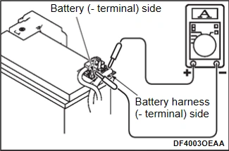
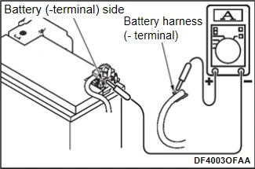

ELECTRICAL & POWER CONTROL - POWER SUPPLY, GROUND & CIRCUIT ELEMENTS - BASIC INSPECTION - 電瓶檢查
暗電流測量
N5140604C0000200ENG
將點火開關轉至「LOCK」（關閉）位置。
確認所有電氣元件（包含客戶加裝的電氣元件）均處於不運作狀態。
警告：
作業須在維持電瓶導通的情況下進行，因為若電瓶對車輛的電源供應中斷，可能導致各 ECU 重設，使暫時性暗電流增加等現象無法偵測。
作業期間不得開關車門。（Auto ACC 將被啟動，導致無法正確測量。）作業期間須保持為進入車輛內裝而需開啟的車門處於開啟狀態。
依下列程序設定測試器，並在維持電瓶導通的情況下置於測量狀態。
將探棒（+ 側）置於電瓶線束（- 端子）上，並以膠帶或其他方式確實固定，使其於作業期間不會鬆脫。固定探棒使其不會接觸螺栓或螺帽。

將探棒（- 側）置於電瓶（- 端子）上，並以膠帶或其他方式確實固定，使其於作業期間不會鬆脫。固定探棒使其不會接觸螺栓或螺帽。

將電瓶線束（- 端子）從電瓶電流感測器斷開／拔除。
警告：
下列步驟 4 至步驟 6 期間不得開關車門。（Auto ACC 將被啟動，導致無法正確測量。）
若有任一車門曾開關，須在開關車門後至少經過 12 分鐘再執行下列作業。
確認測試器有電流通過，並於車門開關後至少經過 12 分鐘測量暗電流。
標準值：小於 60 mA
若暗電流超出標準值：於車門開關後至少經過 30 分鐘再次測量暗電流。若仍偏離標準值，進行步驟 5。
若暗電流符合標準值：暗電流正常。進行步驟 7。
檢查是否有加裝非原廠電氣元件。
若有加裝非原廠電氣設備，拆除非原廠電氣設備後再次測量暗電流。
標準值：小於 60 mA
若暗電流超出標準值：若自車門開關後尚未經過 30 分鐘，待經過 30 分鐘後再次測量暗電流。若仍超出標準值，進行步驟 6。
若暗電流符合標準值：因這些元件造成暗電流增加，請聯絡客戶討論拆除非原廠電氣元件等對策。
若未加裝非原廠電氣元件：進行步驟 6。
依下列程序找出造成暗電流異常的系統。
查閱電路圖，確認點火開關位於「LOCK」（關閉）位置時持續供電的電氣元件（ECU、零件）。
從距離電瓶最遠的已連接保險絲開始，逐一斷開／拔除已確認的電氣元件，使連接能以最小單位分離，並檢查暗電流的變化。
在拆下保險絲的狀態下繼續檢查，並找出造成暗電流大幅下降的系統。
裝回已確認原因系統的保險絲，並於晃動原因系統的線束時檢查暗電流是否變化。
若暗電流變化：檢查原因系統的線束是否短路。
若暗電流未變化：檢查原因系統的電氣元件是否有異常；若發現異常，予以修理或更換。若無異常，則更換已確認原因系統的全部電氣元件。
依下列程序在維持電瓶導通的情況下完成暗電流測量。
連接電瓶（- 端子）。請參閱
拆卸與安裝
.
將探棒（- 側）從電瓶（- 端子）斷開／拔除。
將探棒（+ 側）從電瓶線束（- 端子）斷開／拔除。
已加入書籤
書籤數量過多。
請刪除後重新加入書籤。
×
){kind=link}
){kind=link}